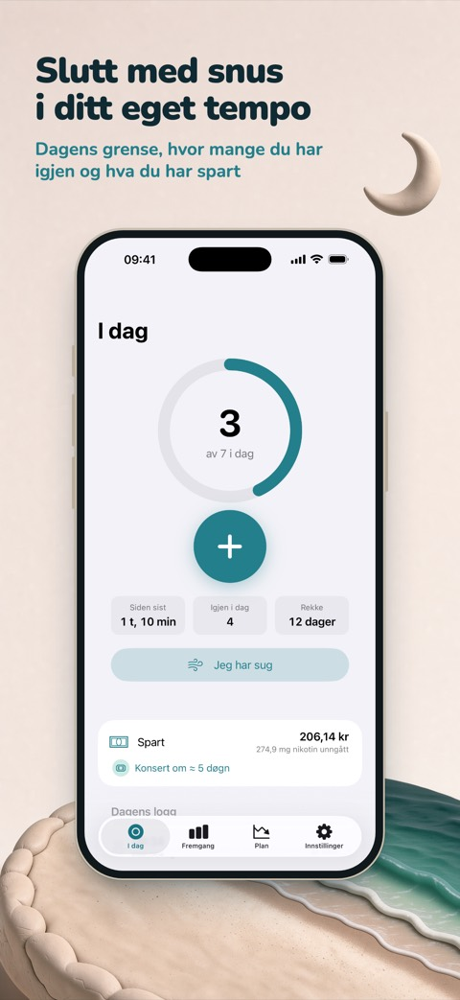
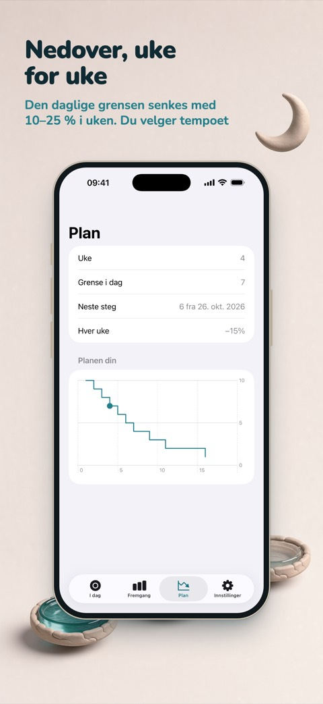
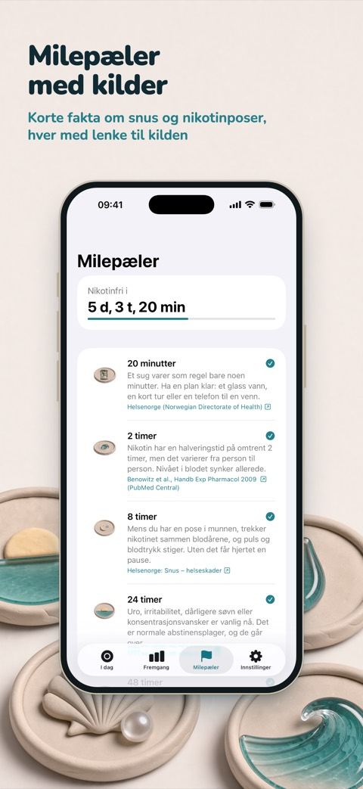

Slutt med snus i ditt eget tempo
Ebb er en iPhone-app for deg som vil kutte ned på eller slutte med hvit snus, nikotinposer og brun snus. Logg en pose med ett trykk, følg en plan som trapper ned uke for uke, og se hvordan pengene du sparer blir til noe du virkelig ønsker deg.



To måter å slutte på
Trappe ned. Fortell hvor mange poser du bruker i dag. Ebb setter en daglig grense som går ned med 10–25 % hver uke, og viser hvor mange du har igjen i dag. Går du over, blir det notert, uten straff. Med Ebb Pro kan du også trappe ned styrken, for eksempel 6 → 3 → 0 mg.
Slutt nå. En tidtaker teller fra den siste posen din. Tolv milepæler, fra 20 minutter til ett år, forklarer hva som skjer, hver med lenke til kilden. Les tidslinjen for abstinensene.
Logg på et sekund
Logg en pose fra widgeten på Hjem-skjermen eller låseskjermen, fra knappen i Kontrollsenter (iOS 18 og nyere), med Siri eller, med Ebb Pro, fra Apple Watch. Når suget kommer, trykker du på «Jeg har sug» for en pusteøvelse på 3 minutter, noterer hva som utløste det, og teller hvert sug du klarer deg gjennom.
Penger du ser
Ebb regner ut det du ikke lenger bruker på snus, og gjør det om til drømmer: en konsert, nye hodetelefoner, en tur. Skriv inn en pris, så viser Ebb hvor snart sparepengene dekker den i ditt tempo. Ebb bare regner, appen rører aldri pengene dine.
Fakta, ikke skrekkhistorier
Hver milepæl kommer fra en offentlig helsetjeneste, et universitet eller en vitenskapelig oversikt, og handler om snus og hvit snus, ikke sigaretter. Ebb lover ikke at lungene blir renere eller at smaken kommer tilbake, for det er funn om røyking.
Personvern fra starten
Ingen konto og ingen reklame. Loggene dine blir på iPhonen din, og med Ebb Pro synkroniseres de via din egen iCloud. Anonym bruksstatistikk hjelper oss å forbedre appen og kan slås av i Innstillinger.
Gratis, og Pro hvis du vil ha mer
Gratis: ubegrenset logging, begge modusene, penger spart, opptil tre drømmer, alle milepæler, den lille widgeten, widgeter på låseskjermen, Kontrollsenter, Siri og pusteøvelsen. Ebb Pro gir deg hele historikken og innsikt, egne planer, Apple Watch, alle widgeter, iCloud-synkronisering og mer. Pro finnes som årsabonnement eller som et engangskjøp; priser og vilkår vises i App Store.
Ebb er for voksne over 18 år. Appen er ikke en medisinsk app og gir ikke medisinske råd.